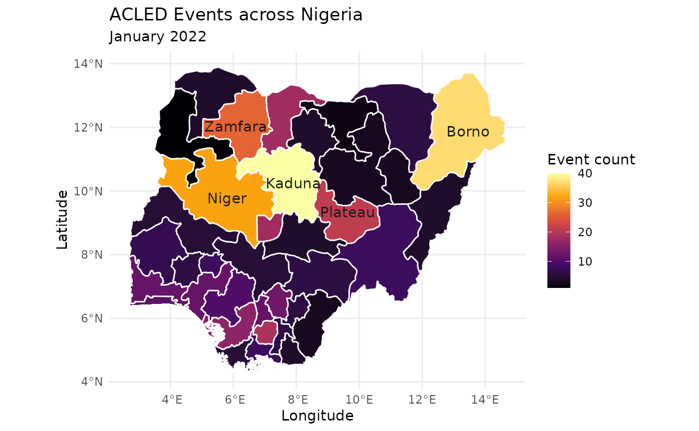

There are up to six different types of spatial information recorded for each ACLED event:
- the continental sub-region in which the event occurred;
- the country in which the event occurred and its associated ISO code;
- the name of the first, second and third level administrative zones that the specific location is found in according to GIS-based assessments and updated administrative codes;
- the name of the specific location of an event;
- the geographic coordinates of that specific location; and
- a spatial precision code.
The most specific location for an event is sought for each ACLED code, using multiple sources to triangulate better location information.
Administrative Levels
As mentioned above, ACLED’s data set includes up to six different types of spatial information. In it, administrative levels are included, stored in columns Admin1, Admin2 and Admin3. These columns provide further information to our users on the location of the event, making it easier to triangulate and locate the particular event, as well as to allow analysis across regions, e.g. how events moved from one region to another throughout a range of time. Administrative levels are generally composed as followed (examples in parenthesis refer to Ethiopia / US):
Administrative Level 1 (Admin 1): Province or Equivalent (e.g. Afar / California))
Administrative Level 2 (Admin 2): District or Equivalent. (e.g. Kilbati-Zone 2 / San Diego )
Administrative Level 3 (Admin 3): County or Equivalent. (e.g. Abaala)
However, administrative levels are hardly an uniform topic across conflict studies. Administrative levels vary, and in some cases, information about these administrative levels becomes unreliable, especially in the Admin 3 level. For instance, when covering certain countries in Africa, their administrative levels may change, and in some cases, locations such as small cities are not always covered. Additionally, some sources may utilize different names, sometimes resulting of language or dialect variations, or the names of administrative levels may not be unique. Furthermore, not every country defines sub-national boundaries the same way, thus, while many countries in Africa include Admin 3s, countries in Europe often don’t.
To account for some of these differences, ACLED researchers are instructed to :
Follow what sources report in terms of location.
If sources have incomplete information on the location, researchers are to triangulate information through following landmarks or relevant information mentioned by the source, and utilize the precision code (see below) to denote that.
If sources include administrative levels which are not part of the standardized list of administrative levels of ACLED, then researchers are allowed to include new entries to out master list by checking OpenStreetMap, Google Maps and NGA GeoNames database.
Our approach allows a standardized way of coding events’ locations, often an issue when covering events around the world. However, if users utilize a different names for some administrative levels, which sometimes occurs in other humanitarian-related data sets, then it is important to take differences into consideration. At the moment, our data set does not include P-Codes. However, we do include an ISO column to allow easier connection with other data sets.
Precision Codes
Very often sources have different degrees of certainty regarding an event occurring in a particular location. For instance, some sources may report an event as “near the 66 highway near City X”, while others may report it at “the event occurred at the town hall of city X along the 66 highway”. In that example, we can see two different degrees of precision. To distinguish these different degrees of precision, as with the case of time, ACLED utilizes different “Precision Codes”. These are as follow:
| time_precision | |
|---|---|
| 1 | If the event was reported in a particular town or in its outskirts and coordinates are available |
| 2 | If the event was reported near a known location or in a small part of a region |
| 3 | If the event was reported in a region without specifying further details |
acledR Example
On the example below we will explore events distribution during January 2022 across Nigeria by utilizing ACLED’s administrative level columns.
library(acledR)
acled_access(email = "acledexamples@gmail.com", key = "M3PWwg3DIdhHMuDiilp5") # This is an example, you will need to input your credentials.
#> $Success
#> [1] "Authorisation accepted"
df_nigeria <- acled_api(countries = c("Nigeria"),
start_date = "2022-01-01",
end_date = "2022-01-31",
monadic = F,
acled_access = T,
prompt = FALSE)We start by pulling the data out of ACLED’s API. First, we call
acled_acess(), and then we make our API call with
acled_api(). Lets explore which are the top 5 admin1s of
Nigeria (also called states).
df_nigeria %>%
janitor::tabyl(admin1) %>%
janitor::adorn_rounding(2) %>%
arrange(-n) %>%
head(5)
#> admin1 n percent
#> Borno 47 0.11
#> Kaduna 40 0.09
#> Niger 32 0.07
#> Zamfara 31 0.07
#> Katsina 23 0.05As observed by our table, Kaduna and Borno are the two most conflict-ridden admin1s in Nigeria, however, conflicts appears generally evenly distributed from there on. Lets plot the geographical distribution:
library(sf)
library(ggplot2)
# grab admin1 level shapefile for Nigeria via the raster package
admin1_nigeria <- raster::getData(name = "GADM", country = "Nigeria", level = 1) %>%
# convert to sf object
st_as_sf()
# generate admin1 level counts and join to sf object of admin1s
df_nigeria_admin1_counts <-
df_nigeria %>%
group_by(admin1) %>%
tally() %>%
left_join(admin1_nigeria, by = c("admin1" = "NAME_1")) %>%
st_as_sf()
# start plotting
ggplot() +
geom_sf(data = df_nigeria_admin1_counts,
aes(fill = n),
color = "white") +
geom_sf_text(data = df_nigeria_admin1_counts %>%
arrange(-n) %>%
head(5),
aes(fill = n, label = admin1),
color = "gray10") +
scale_fill_viridis_c(option = "inferno",
guide = guide_colorbar(title = "Event count")) +
coord_sf() +
theme_minimal() +
labs(x = "Longitude",
y = "Latitude",
title = "ACLED Events across Nigeria",
subtitle = "January 2022")
Given the fact that every event comes paired with a number of geographical variables, ACLED’s data is particularly useful to map conflict in a given region, country, or administrative level. As we will see in the … vignitte (I will put a link here), we can go even further to map conflict in a given administrative level thanks to this.